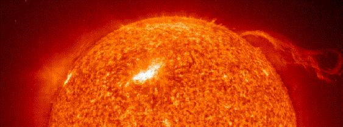

ASTR 1210 (O'Connell) Study Guide
2. COSMIC HISTORY
{kind=link}
Distant galaxies seen in an extract from
the Hubble Ultra Deep Field,
which records the faintest
astronomical objects ever observed.
A. Billions and Billions
Yes, you really do need to use "billion-babble" in an astronomy class. Here's a quick "powers of ten" reminder:- One million is one thousand thousand, or, in powers of ten notation, 1,000 x 1,000 = 103 x 103 = 106.
- One billion is one thousand million, or, in powers of ten notation, 1,000 x 1,000,000 = 103 x 106 = 109.
- A billion of anything is very difficult to visualize. Visualizing a million is much easier: a million seconds elapse in only 11.6 days. But a billion seconds take almost 32 years. We will give some other examples in class.
- The scientific shorthand for quantities measured in billions of a given unit is "giga" --- so 5 billion years (the age of the Sun) is usually referred to as "5 giga-years" or "5 Gyr".
- The scientific shorthand for quantities measured in one billionth of a given unit is "nano" --- so, for instance, "nanotechnology" refers to things that have characteristic sizes of one billionth of a meter.
- A trillion is one thousand billion or one million million, or 1012 in powers of ten notation.
- See Supplement I for more
information on powers of ten notation and units of measure we
will use in this course.
-
Scientists often use the term "order of magnitude" in working
with power of ten scales. One order of magnitude corresponds to a change
of a factor of ten, or a change of one unit in the power of ten.
B. Light as a Distance Standard
The scale of even our local star system is so huge that we would have to quote distances in trillions of ordinary units like miles or kilometers. Instead, astronomers sought a more convenient and more universal standard for measuring distances. Light travels very fast but not infinitely fast. Its speed is 186,000 miles per second or 300,000 km per second (or about 1 foot per nanosecond). The speed of light has been measured in physics labs to a precision of about 1 part in a billion. Furthermore, according to Einstein's Special Relativity the speed of light will always be found to have to same value for any observer in the universe as long as he/she/it is not accelerating through space. Also, in Relativity, no physical object can travel faster than the speed of light. Therefore, light speed is an excellent choice for a standard of velocity. Accordingly, astronomers use the light travel time to objects as a measure of their distance. They characterize distances in terms of the time it would take a light ray to traverse that distance:- For instance, we define a light second to be the
distance a light ray travels in one second of time, which is
186,000 miles. The distance to the Earth's Moon is such that it takes
light 1.26 second to cross it. Therefore, we can say the distance to
the Moon is either "238,000 miles" or, equivalently, "1.26 light
seconds". See illustration below:
The relative sizes and separation of the Earth-Moon system are shown to scale above.
The beam of light is depicted traveling between the Earth and the Moon in the same time it actually
takes light to move the real distance between them: 1.255 seconds at
its mean orbital distance (surface to surface). (From Wikipedia.) - The distance to the Sun is 8.3 light minutes.
- Even the nearest stars are much more distant. A convenient unit
for typical stellar distances is the light year. One light
year is the distance light travels in one year.
- A light year is about 6 trillion miles or 10 trillion km. That's 6,000,000,000,000 miles, or 6x1012 in powers of ten notation.
- For technical reasons, having to do with the practice of determining the distances to stars using the "parallax" method, astronomers more commonly use the parsec as a distance unit. One parsec is 3.26 light-years, so if you see "parsecs" quoted as a distance, just multiply by 3 to convert roughly to light-years.
- Here is a list of distances in light years to some other important astronomical objects.
{kind=link}
{kind=link}
Scale diagram of the Milky Way Galaxy (edge-on)
"You Are Here" marks the location of the Sun
(Click for enlargement)
C. Our Galaxy and Beyond
Our Local Stellar System: the Milky Way Galaxy
Alpha Centauri, the nearest star, is 4.2 light years distant. It is over 250,000 times more distant than the Sun, vastly farther than anyone would have believed before the invention of the telescope.-
Here is a pictorial "zoom
out" from the Earth to the distance of Alpha Centauri.
{kind=link}
-
The Sun is a perfectly ordinary star. It does not stand out
among the myriad of stars in our galaxy.
The Sun is not located near the center of our galaxy --- it is
very much in the "suburbs," about 25,000 light years from the
galaxy's nucleus. See the drawing above.
Recall our scale model from the last lecture: if stars near the Sun
are modeled as oranges, the oranges would be separated by distances of
over 1000 miles! The density of matter near us in the galaxy
is very low.
-
If we tried to construct a model at that scale for the whole galaxy,
it wouldn't even fit on the surface of the Earth! At that scale, the
center of our galaxy would be 10,000,000 miles away, 40 times farther
than the Moon.
{kind=link}
- This interpretation was first proposed
by Thomas
Wright in 1750. Wright's original drawing is
shown here. Wright
also conjectured that some of the faint, diffuse patches of light
found by telescopes were distant galaxies, something that would not be
proved until 170 years later.
{kind=link}
Other Galaxies
It was not until the 1920's that astronomers realized that ours is only one among a vast number of galaxies. There are many other galaxies near ours in space. Here is a chart of the galaxies clustered near our own, the so-called "Local Group." Galaxies can be tremendously bright systems intrinsically, and therefore we can detect them across enormous gulfs of space. Even with the naked eye, you could see four galaxies. (But these are the only things you can see which are not in our galaxy.){kind=link}
{kind=link}
The Andromeda Galaxy in a long exposure image.
Note: the white dots
are all foreground stars in our galaxy.
Andromeda is far beyond them.
{kind=link}
D. The Lookback Effect
--- from "The Tempest," Shakespeare
The fact that we can detect cosmic objects at such enormous distances has one tremendously important consequence. Light rays from distant stars or galaxies have been traveling for long periods of time before they reach us: in fact, they have traveled one year of time for every light year of distance. Therefore:
Because of this "lookback effect," we are able to see other parts of the universe as they were at earlier times. (Of course, we have no choice in this. We cannot, for example, see distant galaxies as they are at the present time.)
For instance, the light you could see tonight coming from the Andromeda Galaxy left its stars 2.5 million years ago, before the modern human species even existed!{kind=link}
- The distances to viewable parts of the "early universe" (over several billion light years away) are so large that only very bright objects can be detected, even by our largest telescopes. We must learn to compensate for the resulting biases.
- Also, we can't usefully explore our own personal past in this way. We do see nearby objects as they were in the past, but the lookback is only on the order of nanoseconds.
|
|
|
{kind=link}
|
The Hubble Space Telescope (HST) in orbit |
Distant galaxies seen in an extract from the "ERS
GOODS" |
E. The Deep Universe
The universe is filled with galaxies, both smaller and larger than our own. As in the case of the Earth and the Sun, we have found from extensive surveys of galaxies that there is nothing special about the physical properties or location of our galaxy.-
Here is a supercomputer simulation of a trip outside our galaxy to
the distance of the largest concentration of galaxies in the nearby
universe (the Virgo Cluster), about 50 million light years away (38 MB
mpeg file from the National Center for Supercomputing
Applications).
Here is another nice simulation of a trip from Earth to the
farthest observable reaches of the universe, far beyond the Virgo
Cluster. (American Museum of Natural History). Both this and the
previous video are based on actual astronomical data sets.
-
Here is the famous
first image released from the Webb telescope (in July 2022). It shows
a distant cluster of galaxies containing thousands of galaxies like
our own. The gravitational mass of the cluster is so large that it is
warping (or "lensing") the trajectories of light rays from yet more
distant galaxies, producing the elongated, reddish images of those
seen in the picture.
There are only a handful of stars in any of these deep
survey pictures. Those are the objects with the extended "spikes".
Every other thing visible in the images, down to the faintest tiny
blob, is a galaxy consisting of billions of individual stars.
There are about 10,000 galaxies over the whole HUDF field.
These pictures represent the present edge of the observable
universe.
The faintest galaxy images here are 10 billion times fainter
than you can see with your unaided eye.
The HUDF covers only a tiny patch on the sky, slightly more than 2
"minutes of arc" across, which is equivalent to the size of a quarter
seen at a distance of about 130 feet. (See the
next study guide for more information on angular measurement.)
Most of the objects visible in the deep fields are so distant their
light has taken billions of years to reach us. Some
of these galaxies are seen as they were over 13 billion years ago!
One of the basic conclusions from studying these distant objects is
that they are different from local galaxies in many ways. For
instance, the distorted shapes you can see in the HUDF are rare among
local galaxies, and the populations of stars in the distant systems
are very young by local standards. In other words, these deep survey
images provide direct evidence that the universe has evolved with
time.
For more details on the Hubble deep fields, click here.
{kind=link}
-
This is a fascinating number. On one hand, it is amazing that we can
calculate it at all and have some confidence that it's correct to
within a couple of orders of magnitude. On the other, it is so huge
that it gives a good sense of the scale of the observable universe.
Needless to say, most of those stars are not detectable
individually.
The next time you go to the beach, pick up a handful of sand and
contemplate this fact: there are more stars in the observable universe
than there are grains of sand on all the beaches on Earth.
F. The Infinite Universe
The structure of space and time on the largest scales is governed by Einstein's theory of General Relativity. By combining that with the plethora of recent data about the expansion of the universe and the structure of the most distant regions we can measure, astronomers have concluded that the universe is spatially infinite in volume. Infinity may be the most difficult concept humans have ever grappled with because it is completely alien to our everyday experience, which, of course, transpires in a finite world. It is impossible to visualize. The ancient Greeks and Indians had discovered the concept of infinity in mathematics, and a number of their thinkers were comfortable with the notion of an infinite universe containing an infinite number of possibly inhabited worlds. Other scientists have been horrified by the implications of an infinite universe.{kind=link}
-
The volume of the observable universe is unimaginably large. Yet
it constitutes exactly zero percent of the volume of the
whole universe.
In an infinite universe, anything that is possible according to the
laws of physics must happen somewhere even if it is extremely
improbable. That means there is another ASTR 1210 class out there
that is exactly like this one. And there is not just one of
these but an infinite number of them!
and which know nothing of me, I am terrified.
The eternal silence of these infinite spaces fills me with dread."
{kind=link}
Star-forming region in a nearby galaxy (Hubble Space Telescope)
G. Earth in the Context of Cosmic History: The "Top Ten"
We now think we have a good understanding of the broad outline of cosmic history. I list the "top-ten" elements of that outline below, roughly in order of their sequence in cosmic time. Some were already highlighted in Guide 01. For a narrative description of the history of the universe, click here.- The universe began about 14 billion years ago in an ultrahot and ultradense state called the "Big Bang" and has been expanding ever since. The spatial volume of the universe is now, and has always been, infinite.
- Physical structure in the present-day universe originated in tiny irregularities in the distribution of matter and energy during the Big Bang which have been "amplified" over the intervening time by the expansion of space and the force of gravity.
- The easily observable matter in the universe is organized into galaxies, huge star systems with typical sizes of 10's of thousands of light years containing billions of stars. Our galaxy is at least 12 billion years old. But it is not special in any way.
- Stars form continuously out of the diffuse "interstellar"
gas in our own and other galaxies. The star formation rate was high
in earlier times, peaking about 10 billion years ago, but is much more
modest now. Some galaxies are quiescent now; ours forms new stars at
a rate of about 1 solar mass per year.
 The Sun (in the H-alpha atomic emission line) showing
active regions and a flame-like "prominence."
The Earth is about 1/8 the size of the elongated bright region. - The Sun is a star, with average properties
-
"Average" means that the Sun is not distinguished from billions of
other stars in our galaxy. This recognition resolves thousands of
years of religious, philosophical, and scientific debate.
This was one of the most important discoveries in science. However,
it cannot be credited to a single individual, because it involved a
long chain of incrementally improving evidence and speculation by many
astronomers since the time of the Greek philosopher Democritus
(ca. 420 BC). The case was clinched by
comparative spectroscopy (see Study
Guide 10) of the Sun and typical stars late in the 19th
century.
"Across the sea of space, the stars are other suns."
--- Christiaan Huygens (1692) - Stars generate their energy by burning hydrogen in nuclear fusion reactions. The hydrogen supply is large but nonetheless finite, so this implies that stars must evolve as they begin to run out of fuel. The Sun will eventually burn out. It is middle-aged now: it formed about 5 billion years ago, about 60% through the age of our galaxy, and its remaining lifetime is about 5 billion years.
- Other than hydrogen and helium, the chemical elements are
synthesized during fusion reactions in stars. They are
recycled to the interstellar medium when stars lose their outer layers
or explode at the end of their lives.
-
All the heavy elements
that make up the Earth originated inside stars now long dead.
That is also true of the
biologically important elements (carbon, oxygen, nitrogen, etc)
that constitute all living things. Stars are an essential part of the
ultimate human cosmic heritage. They are not merely incidental
celestial decoration, as they were often considered in pre-scientific
philosophy.
Here's a video
featuring Neal Tyson discussing this "most astounding fact."
- Planetary systems are a normal byproduct of star formation. We now know of thousands of other planetary systems, some including Earth-sized planets. We believe that almost all stars host planets, and most of them probably host Earth-sized planets.
- Earth is a planet in orbit around the Sun.
- It is unique among the presently-known planets for its
oxygen-rich atmosphere and surface oceans and for
harboring life, which has been present for at least 3 billion
years. Most astronomers are confident that there are millions of
planets like the Earth in our galaxy, but the extent to which those
support advanced lifeforms is unknown without better data.
Human beings are definitely latecomers on Earth: Homo
sapiens has been present only for about 200,000
years---just 0.004% of the age of the Earth. The fact that
this single species has already begun to alter the Earth's
atmosphere and oceans is dramatic testimony to the power of human
technology.
- Earth's biosphere is highly vulnerable to certain
astronomical phenomena, especially asteroid impacts, solar evolution,
magnetically-induced activity on the Sun (because the Earth
is inside the Sun's extended atmosphere), and stellar
explosions.
-
Here is a video of violent magnetic activity
on the Sun. It shows vividly how material is flung off the Sun's
surface during eruption events.
In Study Guide 22 we will consider
the threat from asteroid impacts.
If you're interested in exploring all the astronomical hazards facing
the Earth, have a look at
Death
From the Skies, by UVa PhD Philip Plait (cover shown at
right).
{kind=link}
{kind=link}
Reading for this lecture:
-
Bennett textbook: Ch 1 and Secs 3.4, 3.5.
Study Guide 2
Supplement I (PDF file) Skim and then refer to
this later as needed.
Optional: Cosmic History: A
Brief Narrative
Optional: browse the material on the structure & evolution of the
universe in the Bennett textbook Chs 22 and 23
Optional observing: After you've done the Constellation Quiz (see the
next guide) and become familiar with the
sky, you might want to go to a good dark location on a clear, Moonless
night and try finding:
-
The Milky Way, the plane of our galaxy seen edge-on. The best
views in the evening from the northern hemisphere are in July through October,
when it stretches from the northern to the southern horizon. A deep,
wide-angle exposure is shown here.
The Andromeda Galaxy, the most distant
thing (2.5 million light years) you can see with the naked eye.
See the finding chart
here. The Andromeda region is
visible in the evening sky August through February.
The Scutum Star Cloud. A concentration in
the northern Milky Way composed of about 1 billion stars. See
the finding chart
here. The Scutum region is
visible in the evening sky July through October.
{kind=link}
-
Bennett textbook: Sec. 2.1, 3.5
Study Guide 3
Puzzlah-Preparation Questions
Web Links:
-
Slides shown in lecture (pptx)
Cosmic History: A
Brief Narrative (O'Connell)
Comments by Carl Sagan on our
"transitional age" of cosmic awareness
History of Scientific
Cosmology (American Institute of Physics)
Atlas of
the Universe, a multi-scale map of our universe starting
from the Solar System and extending outward to a scale of
15 billion light years. By Richard Powell.
Scale of the Universe
(interactive viewer by Cary & Michael Huang)
-
Another version is at Astronomy Picture of the Day for
January 12, 2014
A Sense of Scale (P. Falstad)
Powers of Ten Video (Eames). Also try the "Men in Black" or "The Simpsons" versions of the video.
The Universe Within (Powers of Ten) (interactive Java tutorial, FSU)
Planet/Star Size Comparison (HD video) Brandt's Evolutionary/Geological Timeline
Brandt's Almost Endless List of Scales of Measurement
Astroclock 2010 cosmic timelines in detail
ChronoZoom Zoomable display of history on all timescales Timeline Beyond 10,000 AD. Check this site if you're interested in an informed guess as to what will happen to the Earth and humanity in the distant future.
-
Two early science fiction novels were highly influential in
stretching our imaginations about the distant future of humanity
and the Earth:
The Time
Machine (1895) by H. G. Wells and
Last and First Men
(1930) by Olaf Stapledon, the latter covering the (imagined) next two billion
years of human evolution in great detail.
Zoomable Panorama of the Deep Universe (Multiband HST/WFC3 image of GOODS field)
| Previous Guide |
 Guide Index
Guide Index
|
 Next Guide
Next Guide
|